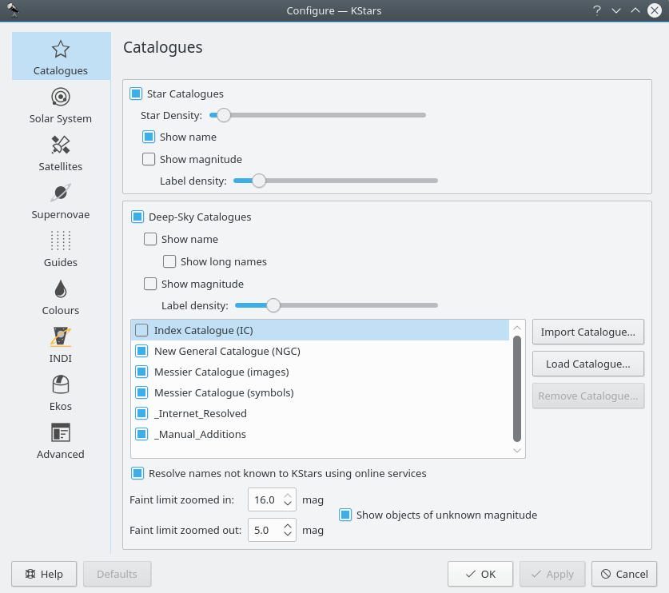
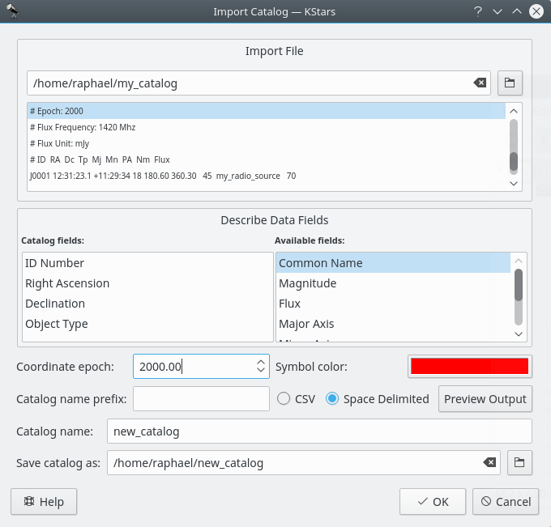
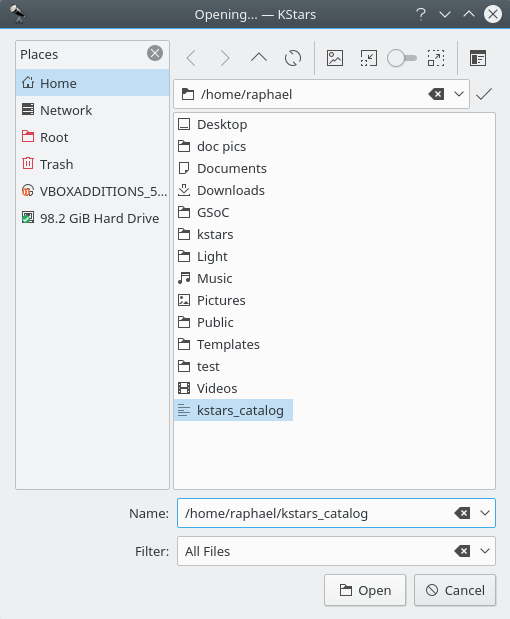
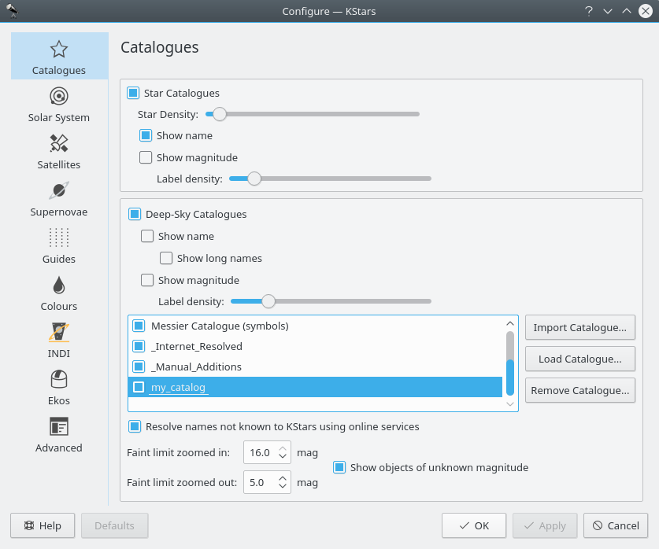
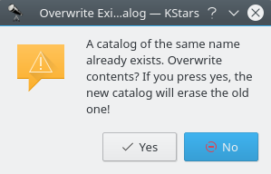
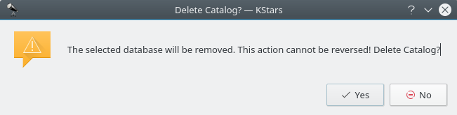
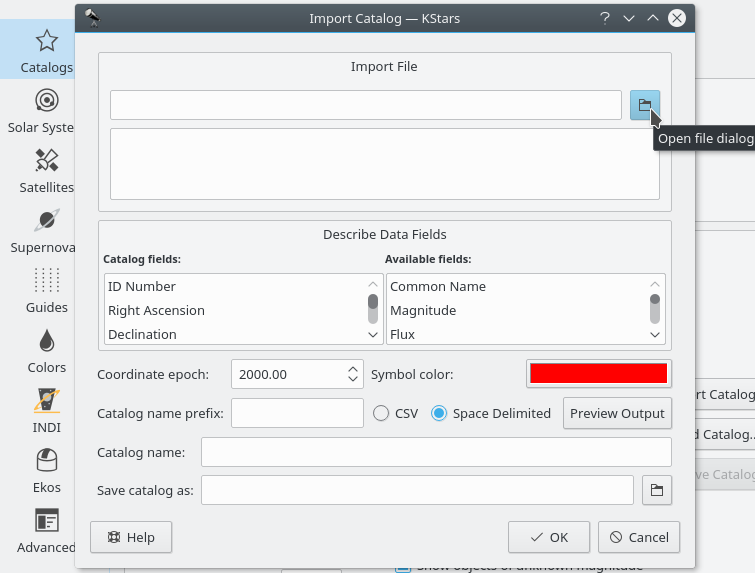
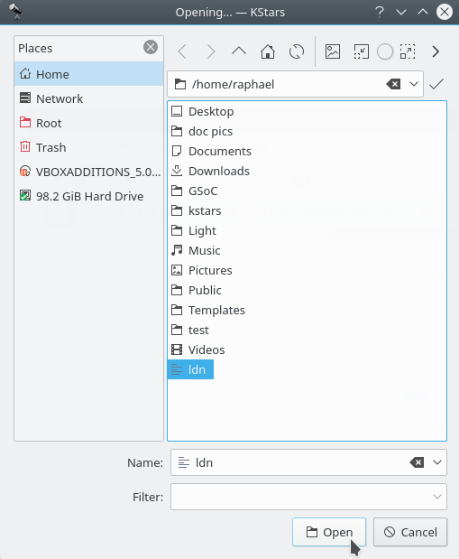
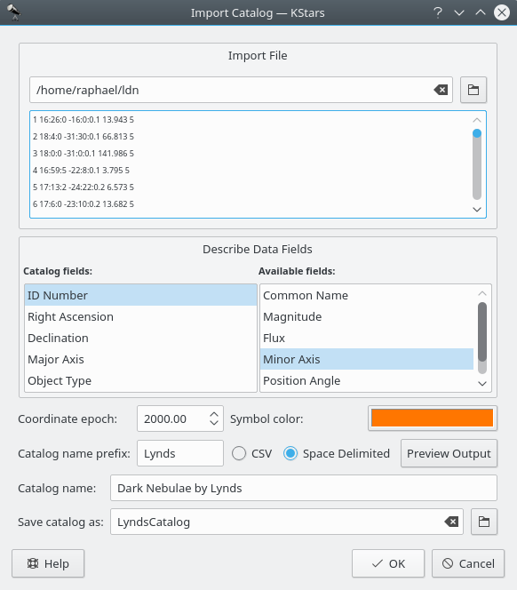
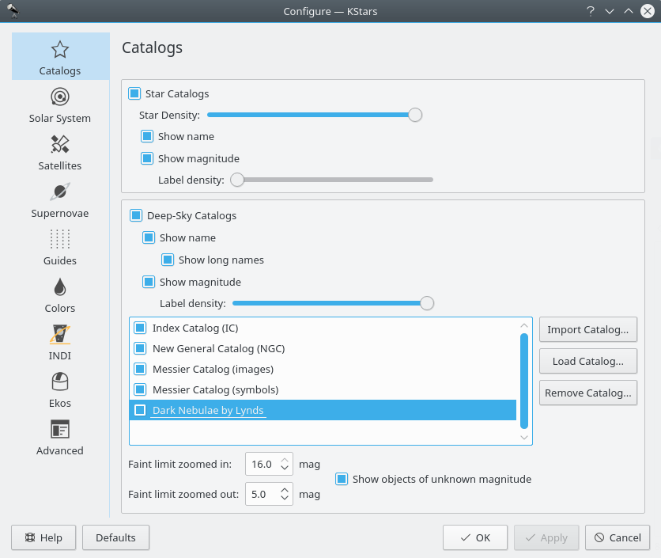

Catalogs

In the Catalogs page, you can configure which object catalogs are displayed by KStars, as well as how much information you would like to be included on the Sky Map. By default, KStars includes ~300,000 named and unnamed stars up to magnitude 8. For Deep Sky Objects, the included catalogs are New General Catalog (“NGC”), Index Catalog (“IC”), and Messier Catalog.
New General Catalogue of Nebulae and Clusters of Stars (abbreviated as NGC) is a catalogue of 7,840 deep-sky objects.
Index Catalogue of Nebulae and Clusters of Stars (abbreviated as IC) serves as a supplement to the NGC, and contains an additional 5,386 objects, collectively known as the IC objects.
Messier Catalogue is a catalogue of 110 deep-sky objects, including diffuse nebulae, planetary nebulae, open clusters, globular clusters and galaxies. Messier objects have names like M1, M2, up to M110. The maximum apparent visual magnitude of Messier Catalogue is represented by M91's value of 10.2.
You can install new catalogues using KStars “Add-On Installer”. You can open it by opening the Data → Download New Data... submenu. You can choose from a list of catalogues, including:
- Steinicke NGC/IC Catalog: is a more complete NGC/IC catalog.
- Abell Planetary Nebulae Catalog: is a catalog of 86 planetary nebulae. The maximum magnitude is represented by Abell 47's value of 19.5.
- Sharpless HII region Catalog: is the Sharpless (Sh2) catalog of HII regions (diffuse nebulae).
- Hickson Compact Groups: is a catalog consisting of 99 compact groups of galaxies.
- Tycho-2 Star Catalog: is a catalog of more than 2.5 million of the brightest stars. It contains stars with a magnitude value from 8.0 to 12.5.
- USNO NOMAD Catalog: is a catalog of about 100 million stars with magnitude from 12.5 to 16.5. Note that is requires Tycho-2 to be installed.
The following is a summary of catalogs in KStars:
|
Name |
Abbreviation |
Number of objects |
Magnitude |
Add-On |
Default |
|
Default Catalog |
Default |
~300,000 |
Up to 8 magnitude |
No |
Yes |
|
Tycho-2 |
Tycho2 |
more than 2.5 million |
8.0-12.5 |
Yes |
No |
|
Naval Observatory Merged Astronomic Dataset |
USNO NOMAD |
100 million |
12.5-16.5 |
Yes |
No |
Table 16.2. Deep-sky objects Catalogues
|
Name |
Abbreviation |
Number of objects |
Magnitude |
Add-On |
Default |
|
Index Catalogue of Nebulae and Clusters of Stars |
IC |
5,386 |
Up to 18.3 magnitude |
No |
Yes |
|
New General Catalogue of Nebulae and Clusters of Stars |
NGC |
7,840 |
- |
No |
Yes |
|
Messier Catalogue |
- |
110 |
Up to 10.2 magnitude |
No |
Yes |
|
Steinicke NGC/IC |
- |
- |
- |
Yes |
No |
|
Abell Planetary Nebulae Catalog |
- |
86 |
Up to 19.5 magnitude |
Yes |
No |
|
Sharpless HII region Catalog |
Sh2 |
- |
- |
Yes |
No |
|
Hickson Compact Groups |
- |
99 |
- |
Yes |
No |
The Stars section allows you to manage how stars are displayed in KStars. You can choose to see the stars or not by checking the Star Catalogs checkbox. If you check it, then multiple options will be enabled. Thus, you can set how many stars are drawn on the map using the Star Density slider. You can also customize KStars to toggle star name and magnitudes. Star names are drawn next to bright stars. To display labels of fainter stars, increase the Label density slider.
Below the stars section, the Deep-Sky Objects section controls the display of several non-stellar object catalogs. You can toggle the display of Deep Sky Objects and control the display of their names and magnitudes. By default, the list of deep-sky objects includes the Messier, NGC and IC catalogs. Addons catalogs are available via the Data → Download New Data... submenu where you can download catalogs provided by KStars team and the community. Furthermore, KStars supports import of custom catalogs. To import a raw ASCII catalog data file into KStars, press the Import Catalog and follow the instructions. To import a custom catalog already in KStars catalog format, press the Load Catalog button. Each line in the custom catalog file should contain the following space-separated fields:
For stars: type(0 for stars), RA, Dec, mag, SpType, name(optional)
For other types: type(3-8), RA, Dec, mag (optional), flux(optional), name(optional)
The types are:
- 0: star
- 1: star (in object catalog...probably don't want to use this)
- 2: planet (don't use this in custom catalog)
- 3: open cluster
- 4: globular cluster
- 5: gaseous nebula
- 6: planetary nebula
- 7: supernova remnant
- 8: galaxy
- 18: radio source
The SpType is a short string for the spectral type. For example, “B5” or “G2”. The coordinates should be given as floating-point values, in the J2000.0 epoch. The name can be anything you wish. If the name is more than one word, it must be enclosed in quotation marks.
Once you have constructed a custom data file, open the KStars configuration window to the Catalogs tab, and press the Import Catalog... button. A popup window appears in which you can specify a name for the catalog, and the name of the file (including the path):

When you press Ok button, KStars will attempt to read the lines of your data file. It will report any problems, and if any lines at all were successfully parsed, you are given a choice to accept the data file (ignoring any unparsed lines), or to cancel the operation to attempt to resolve the problems first.
You can load a new catalog using the Load Catalog... button. A new window will appear, asking you to specify the file that contains the catalog.

Once the data file has been accepted, your custom catalog will be loaded on startup along with the standard catalogs. In the Catalogs window is a checkbox for each catalog which toggles the display of catalog objects.

Note that, if you want to load a catalog that is already loaded, a warning dialog will pop-up.

You can remove custom catalogs by highlighting its checkbox in the Catalogs window, and pressing the Remove Catalog... button (this button is active only if a custom catalog is highlighted in the list of checkboxes). Note that it can not be used for removing KStars default catalogs.

For radio sources catalogs, you must include the flux frequency and units. For example:
# Flux Frequency: 1420 Mhz
# Flux Unit: mJy
The following is a simple catalog file:
# Name: my_catalog
# Prefix: et_radio
# Color: #00ff00
# Epoch: 2000
# Flux Frequency: 1420 Mhz
# Flux Unit: mJy
# ID RA Dc Tp Mj Mn PA Nm Flux
J0001 12:31:23.1 +11:29:34 18 180.60 360.30 45 my_radio_source 70
Using the Catalogs window, you can define faint limits for sky objects for zoomed in and zoomed out states of the rendering. When the Show objects of unknown magnitude item is enabled, objects whose magnitudes are unknown, or not available to KStars, are drawn irrespective of the faint limits set.
The following is a brief tutorial on adding new catalogues to KStars. To import a new catalog, download a raw catalog data file where the data columns are space delimited. Any lines starting with # shall be ignored. For this example, we shall use the “Lynds Catalog of Dark Nebulae”.
- Download / write the raw catalog data file (the raw file is the file containing catalog's objects described by a set of parameters, like: ID Number, Right Ascension, Declination and so on).
|
IMPORTANT |
|
|
|
In order to successfully load a custom catalog into KStars, you need to use the following syntax: (otherwise your catalog will be entirely ignored or maybe some objects from your catalog will be wrongly drawn)
|
The following is a subset of the original raw data file:
1 16 26.0 -16 0 .18 +21.82 .054 3 49 8 452
2 18 4.0 -31 30 .13 -05.32 1.240 2 0 4 837
3 18 0.0 -31 0 .15 -04.33 5.600 2 0 6 817
4 16 59.5 -22 8 .18 +11.82 .004 5 27 7 533
5 17 13.2 -24 22 .20 +07.96 .012 4 0 9 595
The raw file contains some extra information, unusable for KStars. It also contains extra white spaces and values are not meeting KStars expectations (i.e. for Right Ascension: colon-delimited hh:mm:ss.s or floating-point value). Thus, it need to be modified in order to match KStars format. For a better understanding on what each column means, you can take a look at the original source of the catalog. It contains the raw data file and, in addition, it contains an useful readme, which will help you understand what you should keep and furthermore, what you need to remove from the raw data file. Minimally, the raw data file should contain the following fields:
- ID Number
- Object Type
- Right Ascension
- Declination
The raw “Dark Nebulae by Lynds” contains only three usable fields for KStars: Right Ascension, Declination and Area (square degrees). Therefore, in order to properly import the catalog into KStars, the ID and Object Type fields need to be added. You can insert these values manually using your favorite text editor. However, it is recommended to use any spreadsheet application to import the raw data file and add the necessary columns. This is especially convenient for large data sets. Since the original raw data contains an area field which is not supported by KStars, we need to approximate it to a usable value which is the Major Axis. Therefore, we use the following formula in the spreadsheet to convert area to major axis in arcminutes: Major Axis = sqrt(Area) * 60
After importing the raw data file into KStars and selecting the appropriate columns, KStars shall generate the final catalog file suitable for loading directly into KStars. For example, this is a small subset of the content (header + first five objects) of the “Dark Nebulae by Lynds” catalog which was created by KStars after importing the raw data file which only contains the data columns:
# Delimiter:
# Name: LyndsCatalog
# Prefix: Lynds
# Color: #ff7600
# Epoch: 2000
# ID RA Dc Mj Tp
1 16:26:0 -16:0:0.1 13.943 5
2 18:4:0 -31:30:0.1 66.813 5
3 18:0:0 -31:0:0.1 141.986 5
4 16:59:5 -22:8:0.1 3.795 5
5 17:13:2 -24:22:0.2 6.573 5
As seen above, each column was assigned a KStars designated header such as the ID, Right Ascension, Declination, Major axis and Object Type fields. Note that the Catalog Prefix (“Lynds”) and the ID field are used together for identifying objects in the Sky Map (i.e. objects from this catalog will have names like: Lynds 1, Lynds 2, Lynds 617 up to the last object, Lynds 1791).
- Open the Settings → Configure KStars... menu and choose Catalogs tab.
- In the Deep-Sky objects section, press the Import Catalog... button. If the button is not available, check the Deep-Sky Catalogs checkbox. This will enable you to configure KStars deep-sky objects catalogs.
- After you press the Import Catalog... button, Import Catalog window will pop up. At first, click on Open file dialog button in order to select the raw data file.

In the dialog window, find your raw file, select it and then press Open button.

Now, you need to specify the correct order of the catalog fields within the raw data file. The fields must be added inside Catalog fields list. Note that you can drag fields in order to build the right order or you can use additional fields from Available fields fields. For example, if your raw data file contains a magnitude column, then you need to add Magnitude field to the Catalog fields list.

- After you set the fields so that they match to your catalog raw file, you can move to the next step: completing the remaining input fields: Coordinate epoch, Catalog name prefix, Catalog name and Save catalog as. You can also choose the Symbol color used for your catalog. There you can specify how the fields are split within the raw data file: CSV (Comma-separated values) or Space Delimited.
- You can preview the output by pressing the Preview Output button. Pay attention to the header fields to have the same order as your catalog fields (i.e. ID RA Dec Major Axis and Object Type).
- Press OK button to close the Catalog Preview window. Then press OK button again to create and save your catalog.
- After you successfully imported your catalog, it will be displayed in the catalogs list. You can choose to be displayed or not, by pressing on its checkbox.
